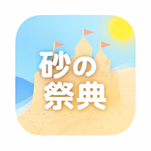

受付QRを読み取りました。
次は 「ホーム画面に追加」 をして、できた アイコンから開始 してください。
（この画面からゲームは開始できません）

📱 iPhone（Safari）
画面下の 共有（）→ 「ホーム画面に追加」
📱 iPhone（Chrome）
画面の 共有（）→ 「ホーム画面に追加」
📱 Android（Chrome）
右上の ⋮ メニュー → 「ホーム画面に追加」（または「アプリをインストール」）
追加できたら、この画面を閉じて、
ホーム画面にできたアイコンをタップしてスタートしてください。